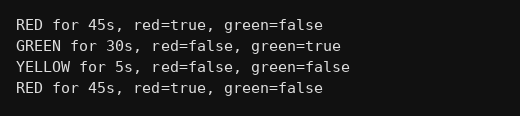

package oop;
public class Q359 {
static class TrafficLight {
String color;
int time;
TrafficLight(String color, int time){ this.color=color; this.time=time; }
void changeColor(){
if(color.equals("RED")){ color = "GREEN"; time = 30; }
else if(color.equals("GREEN")){ color = "YELLOW"; time = 5; }
else { color = "RED"; time = 45; }
}
boolean isRed(){ return color.equals("RED"); }
boolean isGreen(){ return color.equals("GREEN"); }
}
public static void main(String[] args) {
TrafficLight t = new TrafficLight("RED",45);
for(int i=0;i<4;i++){
System.out.println(t.color+" for "+t.time+"s, red="+t.isRed()+", green="+t.isGreen());
t.changeColor();
}
}
}